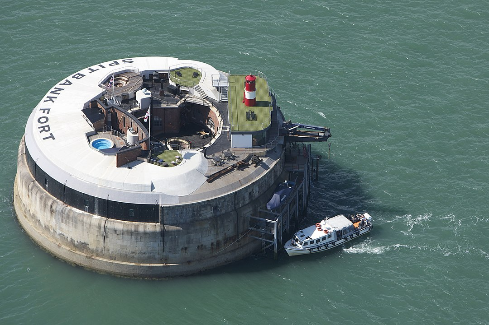

Spitbank Fort
Spitbank Fort or Spitsand Fort or Spit Sand Fort or simply Spit Fort is a sea fort built as a result of the 1859 Royal Commission. The fort is one of four built as part of the Palmerston Forts constructions. Located in the Solent, near Portsmouth, England, it has been a Scheduled Monument since 1967.

By Amanda Retreats - Own work, CC BY-SA 3.0, Link
History
The four armour-plated forts were designed by Captain E. H. Stewart overseen by Assistant Inspector General of Fortifications, Colonel W. F. D. Jervois. Construction started in 1867, and was completed in 1878, at a cost of £167,300.
Spitbank is smaller than the two main Solent forts, Horse Sand Fort and No Man's Land Fort. Its main purpose was as a further line of defence for ships that made it past the two main forts. It is 49.4 metres (162 ft) in diameter across at its base, with one floor and a basement and armour plating only on the seaward side. It was originally planned to have been armed with nine 10" 18-ton rifled muzzle loader (RML) guns on the seaward side, and six 7" seven-ton RML guns on the landward side. However, by the time of completion the plan had changed so that the seaward side received nine 12.5-inch muzzle-loading (RML) guns. From 1884 more modern 12-inch breechloading guns were installed and these were in service until after World War I.
In 1898 the role of the fort was changed to defend against light craft and the roof was fitted out with two 4.7" guns and searchlights. In the early 1900s all but three original large guns were removed. Minor upgrades to the smaller guns and searchlights continued through the years.
The fort was declared surplus to requirements in 1962 and disposed of by the Ministry of Defence in 1982. The fort is now privately owned and operated by AmaZing Venues under the Solent Forts brand. It has 50 rooms, its own dance hall, restaurant, and was once available for private functions with limited accommodation available. It was the venue for the Coalition Festival in the summer of 2009, and other psytrance and hard dance parties.
In 2009 it was put on sale for £800,000 but was sold before auction, reportedly for more than £1m.
Spitbank, as of April 2012, is owned by Clarenco LLP (owners of Horse Sand Fort and No Man's Land Fort), and has been renovated for use as a luxury spa hotel and retreat with nine bedroom suites.